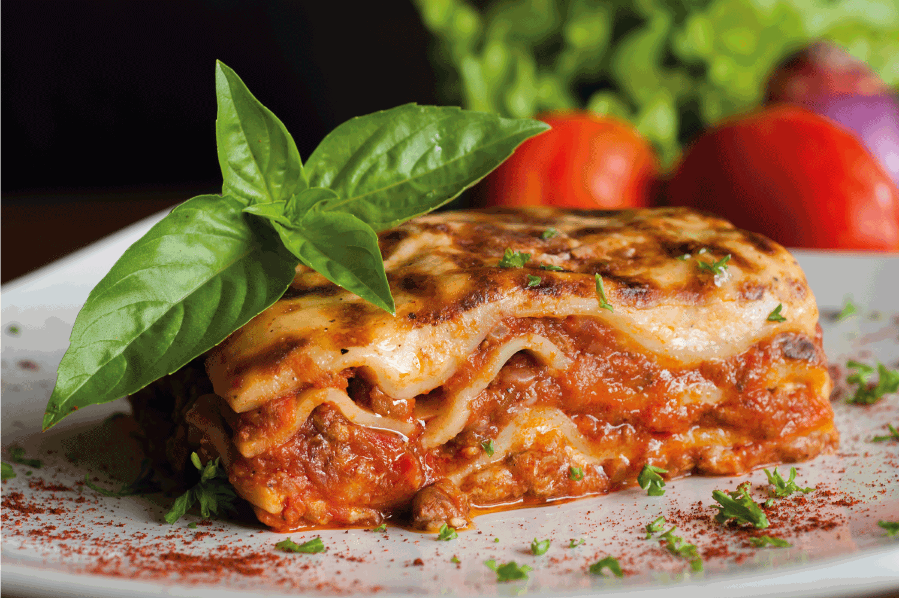

Lasagna

Description:
The picture showcases a delectable lasagna dish nestled in a white plate. Its top layer boasts a golden-brown, bubbling cheese crust, hinting at the flavorful layers beneath. Visible within are perfectly cooked lasagna noodles, coated generously in tomato sauce mingled with savory ground meat. Between these layers lie luscious blends of creamy ricotta, spinach, and aromatic herbs, beautifully garnished with fresh basil. The image captures the essence of this Italian comfort food, inviting one to savor the harmonious blend of cheesy goodness, hearty sauce, and enticing aromas.
Ingredients:
- Lasagna noodles (around 12-15 sheets)
- 1 pound (450g) ground beef or Italian sausage
- 1 onion, finely chopped
- 3 cloves garlic, minced
- 24-32 ounces (680-900g) of your favorite tomato sauce or marinara sauce
- 1 can (14-ounce) crushed tomatoes
- 1 tablespoon olive oil
- Salt and pepper to taste
- 15 ounces (425g) ricotta cheese
- 1 large egg
- 1/4 cup fresh parsley, chopped
- 2 cups shredded mozzarella cheese
- 1 cup grated Parmesan cheese
- 1 teaspoon dried oregano
- 1 teaspoon dried basil
- 1/2 teaspoon red pepper flakes (optional)
- 1 cup chopped spinach (optional)
- Cooking spray or olive oil for greasing the baking dish
Instructions:
- Preheat your oven to 375°F (190°C).
- Cook the lasagna noodles according to package instructions until al dente. Drain and lay the noodles flat to prevent sticking.
- In a large skillet over medium heat, add olive oil. Sauté chopped onions until translucent, then add minced garlic. Cook for another minute until fragrant.
- Add ground beef or Italian sausage to the skillet and cook until browned. Drain excess fat if needed.
- Pour in the tomato sauce or marinara sauce along with the crushed tomatoes. Season with salt, pepper, dried oregano, dried basil, and red pepper flakes if using. Simmer the sauce for about 10-15 minutes, allowing the flavors to meld. Add chopped spinach if desired and cook until wilted.
- In a mixing bowl, combine ricotta cheese, beaten egg, chopped fresh parsley, salt, and pepper. Mix well to create the cheese filling.
- To assemble the lasagna, spread a thin layer of the meat sauce on the bottom of a greased baking dish. Place a layer of cooked lasagna noodles over the sauce.
- Spread a portion of the ricotta cheese mixture over the noodles, followed by a layer of the meat sauce and a sprinkle of mozzarella and Parmesan cheese.
- Repeat the layers - noodles, ricotta mixture, meat sauce, and cheeses - until all ingredients are used, ensuring the top layer is meat sauce and cheese.
- Cover the baking dish with foil and bake in the preheated oven for about 25-30 minutes.
- Remove the foil and bake for an additional 10-15 minutes or until the cheese on top is melted and bubbly, and the edges are lightly browned.
- Let the lasagna rest for about 10-15 minutes before slicing. This allows it to set and makes it easier to serve.
- Serve slices of delicious homemade lasagna and enjoy your meal!